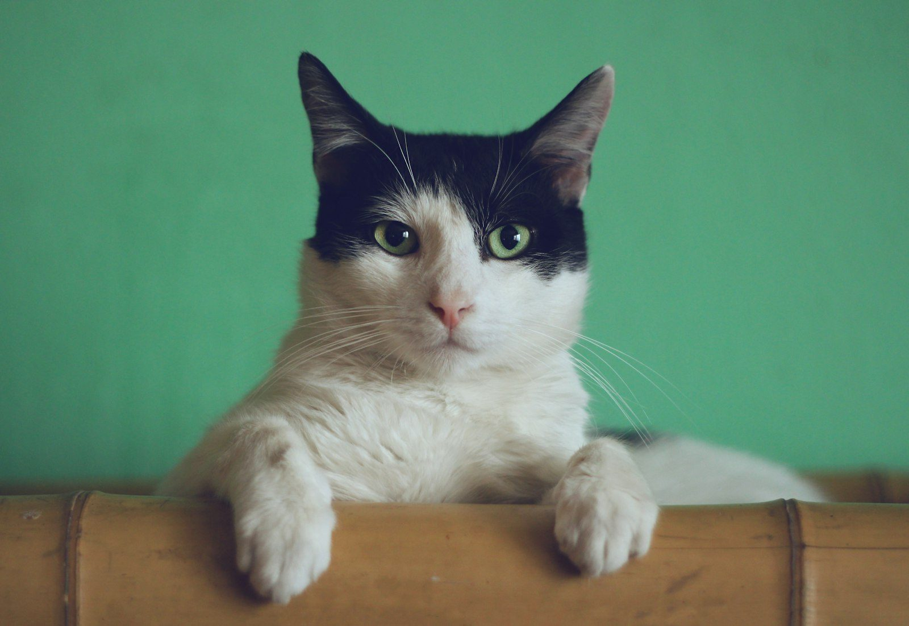

Local 1, Valle de Aragón 3ª sección, C.P. 55280. Lunes a sábado de 11:00 a 19:00 y domingo de 10:00 a 12:00, según Google.
Agendar por WhatsApp55 2332 8865No hay un tarifario oficial publicado. La ficha lo lista como veterinaria y tienda de artículos para mascotas. Confirma disponibilidad al llamar.
Atención clínica de perros y gatos. Consulta para confirmar disponibilidad.
Medicina preventiva. Pregunta el esquema al agendar.
Procedimientos quirúrgicos, según agenda. Confirma al llamar.
La ficha de Google también lo clasifica como tienda de productos para mascotas.

La ficha pública corresponde a Valle de Guadiana 213, local 1, en Valle de Aragón 3ª sección. El teléfono publicado es el 55 2332 8865. No se encontró un sitio web oficial propio. Esta página es un mockup.
✔ Domingo solo de 10:00 a 12:00, según Google
✔ C.P. 55280
Calificación 4.7 ★ en Google
★★★★★
“El mejor de todos los vets y tiene un gran corazon y cariño por los animales. Llevo a misascotas desde hace más de 15 años”
★★★★★
“Excelente atención del veterinario Julián , y muy excelente servicio, súper comprometido, profesional y empático Súper recomendado”
★★★★★
“Desde hace más de 8 años acudo con el, y jamas defrauda, excelente servicio y profesionalidad con los animales así como con sus dueños. Sin duda mi veterinario de confianza. Incluso en emergencias en la madrugada acude a atender a nuestros animalitos. 10000/10”
★☆☆☆☆
“Mi experiencia no ha sido nada buena con ese veterinario, ya que cuando yo llevaba a mis Yorkshire hembras a que él les aplicara vitamina B, no les aplicaba nada y solo hacia como que las inyectaba pero las pellizcaba, y eso me percaté porque cuando decidí ir con otro veterinario porqué Montoya queria operarme a una hembra sin antes tomar algún ultrasonido, fue cuando con el otro veterinario si le inyectó vitamina B y tiene un olor característico, aunado a que cuando le lleve a una hembra porqué le sentía algo en el abdomen, si hacer algún ultrasonido y prueba de sangre me dijo, la opero y…”
Datos de contacto, horario y ubicación.
No se encontró un sitio oficial propio. Esta página es un mockup.
Según Google: lunes a sábado de 11:00 a 19:00 y domingo de 10:00 a 12:00. El domingo no aparece como horario corrido de todo el día.
Valle de Guadiana 213, local 1, Valle de Aragón 3ª sección, C.P. 55280, Ecatepec.
Al 55 2332 8865.
La ficha consultada muestra 4.7 de 5 a partir de 207 opiniones. La hoja del proyecto tenía 215.
📍 Dirección: Valle de Guadiana 213, local 1, Valle de Aragón 3ª sección, 55280 Ecatepec de Morelos, Méx.
📞 Teléfono: 55 2332 8865
| Lunes a sábado | 11:00 – 19:00 |
| Domingo | 10:00 – 12:00 |
Llama o escribe por WhatsApp al 55 2332 8865 para confirmar horario y disponibilidad.
Agendar por WhatsApp